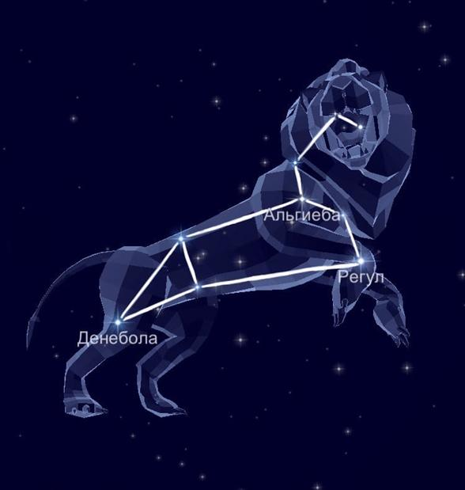

В северном полушарии неба располагается созвездие Малый Лев. Поскольку охватывает 232 квадратных градусов, то занимает 64 месте среди всех участков. Область прилегает к Большой Медведице, Льву, Раку и Рыси. На самом деле, созвездие Малый Лев — молодая и современная небесная часть. Считается, что создал её в 17 веке Ян Гевелий, который добавил в свой звёздный атлас.
Миф о происхождении.
Принято считать, что зодиакальное созвездие Лев - это убитый Гераклом Немейский лев (первый подвиг Геракла).
Звёзды, образующие созвездие Лев.
Как уже было отмечено, созвездие Малый Лев лишено Альфы.
Итак, ярчайшая звезда 46 Малого Льва находится в процессе эволюции от субгиганта к гиганту. По-другому, носит имя Преципуа, что означает главная. Это претендент на звание Альфы.
На втором месте стоит Бета, которая представляет собой двойную систему.
Затем идёт 21 Малого Льва — белый карлик Далее следует 10 Малого Льва, являющаяся гигантской звездой жёлтого цвета.
37 Малого Льва выражена жёлтым сверхгигантом.
Звёзды 20 и 11 Малого Льва относятся к двойным системам. Интересно, что 11 Малого Льва является ближайшей к нам.
Стоит отметить, HD 87883 — карликовое светило оранжевого цвета.
Как оказалось, видимость области приходится на широте от +90 до -48 градусов. Следовательно, созвездие Малый Лев полностью доступно для жителей России. Всё же лучше посвятить наблюдению за ним март и апрель.
|

|